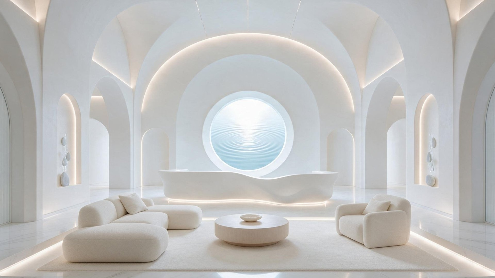
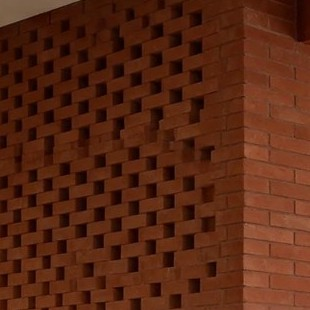
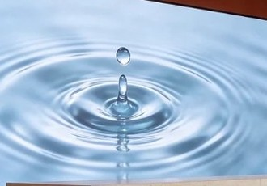
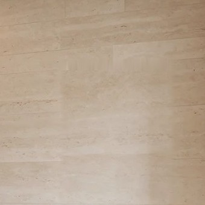
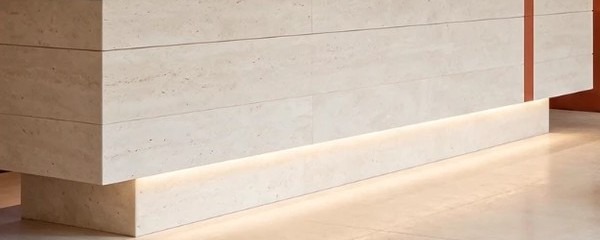
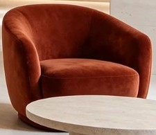

Reception
Breeze brick
Ripple film
Travertine
Floating desk
Rust velvet
따뜻한 흙과 고요한 돌, 그 사이로 퍼지는 물결.
테라코타 벽돌이 리셉션을 감싸 하나의 방을 만들고, 그 안에서 물방울의 파문이 조용히 퍼집니다.
아이보리 트래버틴 데스크는 바닥에서 떠 있듯 가볍게 놓여, 단단한 소재 속에서도 부드러운 아름다움이 느껴지도록 했습니다.
물결 리듬으로 쌓은 타공 벽돌과 천장 캐노피Breeze brick · canopy
가로 띠로 쌓은 아이보리 트래버틴 플로팅 데스크Honed ivory travertine
박스 안 스크린에 흐르는 물방울 파문 영상Ripple film screen
러스트 벨벳 라운지 체어와 테라코타 도자기 램프Rust velvet · ceramic
둥근 곡선의 아이보리 부클레 소파Ivory bouclé sofa
벽돌 속 빛 라인, 데스크 아래 간접광Hidden warm light lines